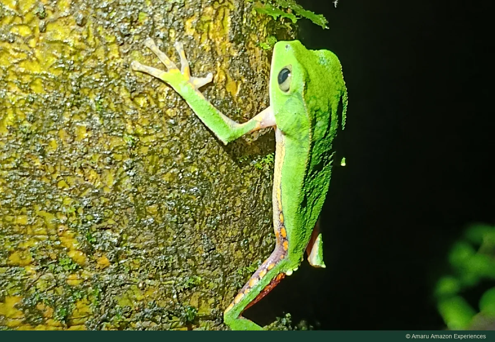

Puerto Nariño · Amazonía colombiana
Caminata nocturna en la selva amazónica
Una caminata con linterna entre pequeñas criaturas y sonidos extraordinarios.
Consultar con Amaru por WhatsApp ↗
Sobre esta experiencia
Una caminata guiada después del atardecer. Busca ranas, insectos y otra vida nocturna. Es una actividad distinta de Kaya, que es diurna.
Qué explorar
- Caminata guiada después del anochecer
- Fauna nocturna y sonidos de la selva
- Calzado, linterna y ruta por confirmar
Antes de salir
- Momento del día
- NOCTURNO
- Duración
- Confirma con Amaru la duración y el punto de encuentro para tus fechas.
Consulta la ruta, el calzado y la linterna antes de salir. Camina despacio y sigue las indicaciones del guía sin manipular fauna. Pregunta si la ruta es adecuada para todo tu grupo; si también quieres pasar la noche en la selva, consulta esa experiencia por separado.
Lleva agua, protección para la lluvia y calzado adecuado. Consulta la lista específica de tu salida.
¿Qué debo confirmar?
Pregunta por la ruta, la salida, los requisitos del grupo, el idioma del guía, el equipo, los traslados y los servicios incluidos. Comparte tus fechas y número de viajeros, y revisa el precio total y las condiciones de cancelación antes de confirmar.
Las rutas dependen del nivel del agua, el clima y las condiciones locales. Los avistamientos de fauna no se pueden garantizar.
AMARU AMAZON EXPERIENCES
Planea esta experiencia
Elige esta experiencia por separado o conversemos sobre cómo integrarla a tu viaje. Una consulta no confirma una reserva y esta web no recibe pagos.
Consultar con Amaru por WhatsApp ↗